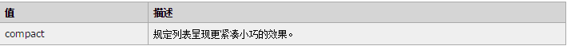

任何主流浏览器都不支持 compact 属性。
代码： <ol compact="compact"> <li>Coffee</li> <li>Tea</li> <li>Milk</li> </ol>
在 HTML 4.01 中，不赞成 compact 属性；在 XHTML 1.0 Strict DTD 中，不支持 compact 属性。请使用 CSS 代替。
reversed 属性
<ol reversed> <li>咖啡</li> <li>牛奶</li> <li>茶</li> </ol>
注释：目前只有 Chrome 和 Safari 6 支持 ol 元素的 reversed 属性。
<ol start="50"> <li>咖啡</li> <li>牛奶</li> <li>茶</li> </ol> <ol type="I" start="50"> <li>咖啡</li> <li>牛奶</li> <li>茶</li> </ol>
<ol type="I"> <li>HTML</li> <li>XHTML</li> <li>CSS</li> </ol>
在 HTML 4.01 中，不赞成 type 属性；在 XHTML 1.0 Strict DTD 中，不支持 type 属性。请使用 CSS 代替。